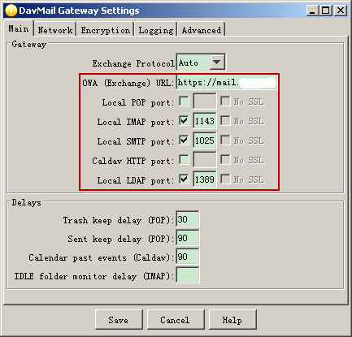
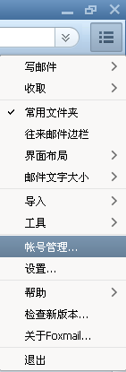
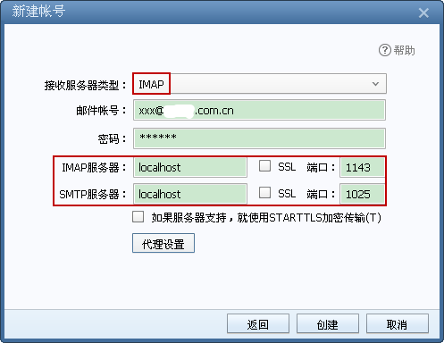
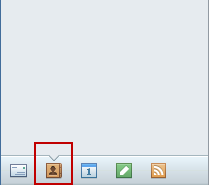
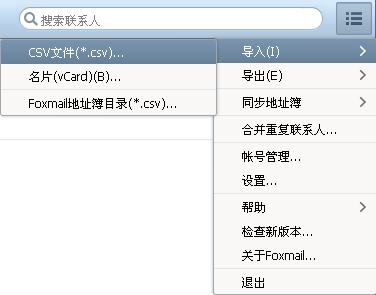
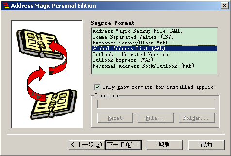
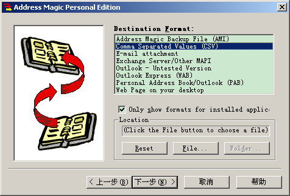
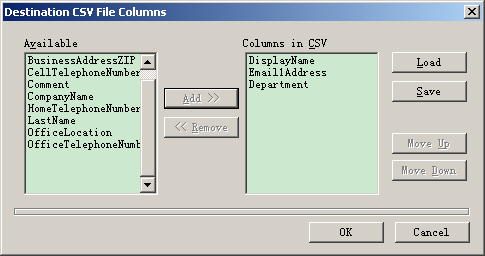

1 背景
由于公司的邮箱服务器改为使用Exchange，而Outlook在Windows XP下实在太卡，所以只能寻找替代方案。
虽然较新版本的Foxmail声称支持Exchange，不过实际测试并不行，也可能是邮箱服务器的设置问题，所以暂时搁置。
然后找到了第一个可行的替代方案是Thunderbird+ExQuilla插件，效果比Outlook要好一些，使用一段时间后还是觉得差强人意。
第一个方案还有一个缺点就是ExQuilla插件只能免费使用一段时间，之后每年都需要购买license。。。
再后来还是觉得以前一直用的Foxmail好用省心，所以在网上寻找可行方案，最终找到了第二个方案：Foxmail+DavMail。
Foxmail并不是必要的，任何其他支持POP、IMAP、SMTP的邮箱客户端都可以。这个方案的核心是DavMail，作为中介连接邮箱客户端和邮箱服务器。
2 DavMail
2.1 安装
DavMail的安装比较简单，自己到 官方下载页面 下载安装文件然后安装即可。
2.2 配置
如下图配置即可：

其中OWA(Exchange) URL一栏填入公司邮箱服务器的OWA URL： https://mail.xxx.com.cn/owa
如果点击Save按钮保存配置报错说无法绑定端口的话，则自行选择 没有被占用 的端口号。
设置DavMail开机启动：开始菜单->所有程序->启动->右键选择打开，放入DavMail的快捷方式。
3 Foxmail
3.1 安装最新版本（可选）
如前面所述，安装Foxmail并不是必要的，大家可以选择自己常用的邮箱客户端，配置方法是类似的。
下文以新版Foxmail为例说明配置方法。
3.2 配置
- 新建帐号
如下图所示选择帐号管理菜单项：

选择新建->手动设置，如下图配置：

图中的邮件帐号根据实际情况填写，端口号要与上面DavMail配置的 保持一致 。
- 导入通讯录
如下图所示切换到通讯录标签页：

选择导入->CSV文件，然后按照提示选择contacts.csv文件（后面会说明如何提取通讯录）导入即可：

至此配置结束，enjoy!!!
4 通讯录提取与更新(可选)
通讯录根据需要，可以每半年或者一年更新一次，毕竟常联系的也就那么几个。
通过Address Magic可以导出通讯录，关键操作如下：
源格式选择GAL：
目标格式选择CSV：
导出columns按照下图选择：

在导出的CSV文件第一行前面插入新的一行，填入三列内容分别为姓名、电子邮件地址、部门。
保存文件后通过前面所述的方法打开Foxmail导入通讯录即可。